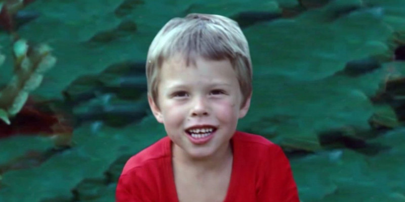

June 28, 1971: Born in Pretoria, South Africa
Musk was born on June 28, 1971, in Pretoria, South Africa. He is the son of Maye Musk, a model and dietitian from Regina, Saskatchewan, Canada, and Errol Musk, a South African electromechanical engineer, pilot and sailor.
